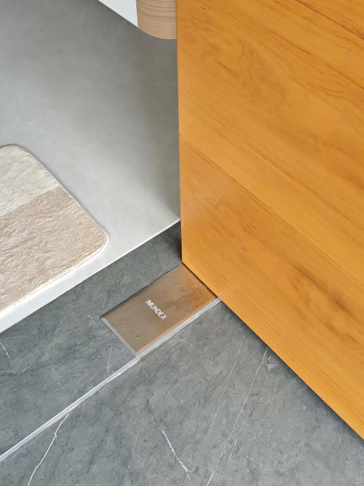
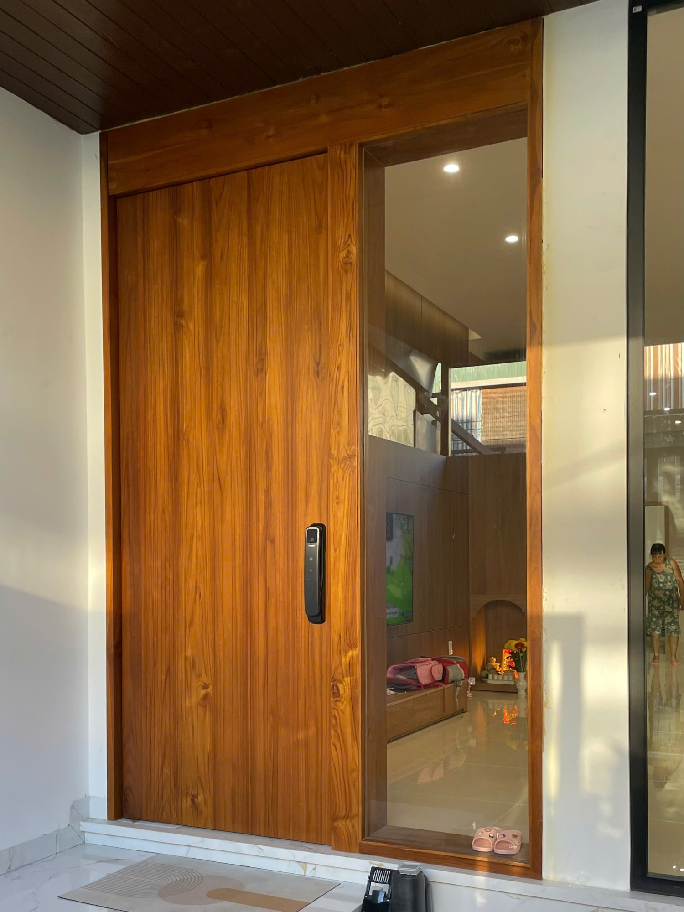

Tin tức
Kinh nghiệm từ xưởng.
Cách chọn gỗ, kiểu cửa, phụ kiện và những công trình mới hoàn thiện. Bài mới mỗi tuần.

Thêm công cụ đo Lỗ Ban vào website
Tra thước Lỗ Ban 52,2cm cho cửa: nhập kích thước thông thủy theo mm, xem cung tốt xấu và gợi ý số đẹp gần nhất.

Bản lề sàn Imundex cho cửa gỗ: chọn loại 100, 120 hay 300kg?
Các mã bản lề sàn Imundex, thông số 708.16.120, bộ phụ kiện cho cửa gỗ và cách chọn mức tải theo trọng lượng cánh.

Chọn gỗ làm cửa chính: Teak, Lim hay Kiền Kiền?
So sánh độ bền ngoài trời, cong vênh, trọng lượng, màu vân và chi phí của ba loại gỗ làm cửa chính phổ biến.